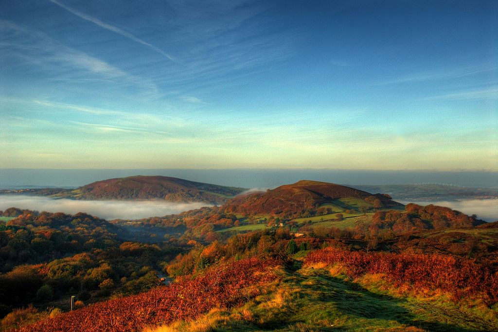
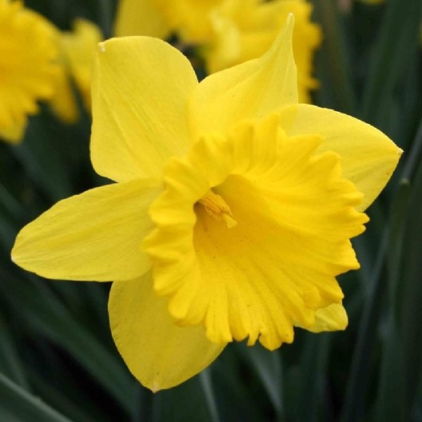

Lab 11: Advanced Block-Level Styling 1
Challenge:
The aim of this lab was to work with a partner and experiment with block-level styling.
Problems:
I struggled initially to make the links div sticky but I reviewed the lecture and was able to solve it.
Results:
The result of the lab is this webpage.

